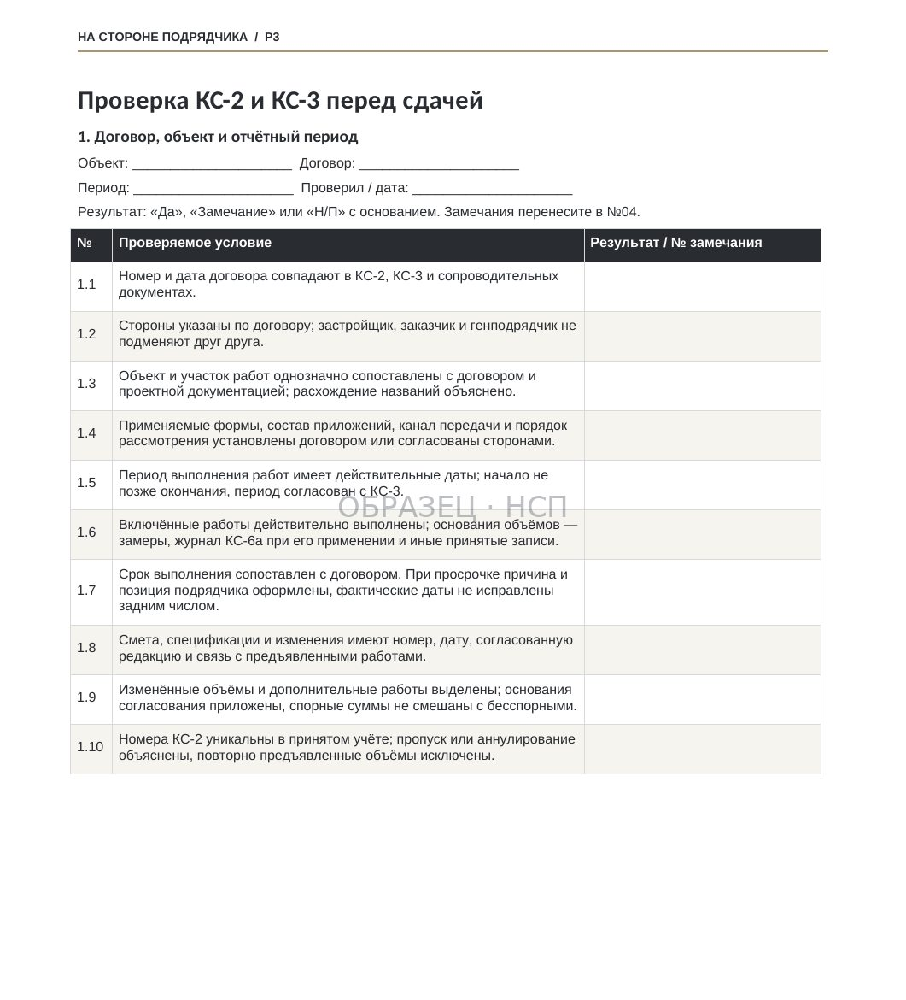
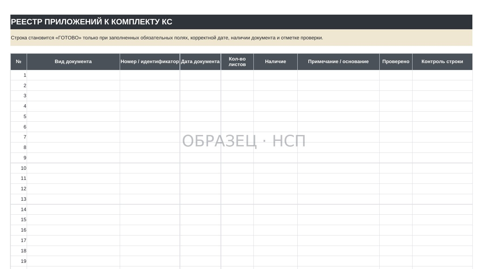
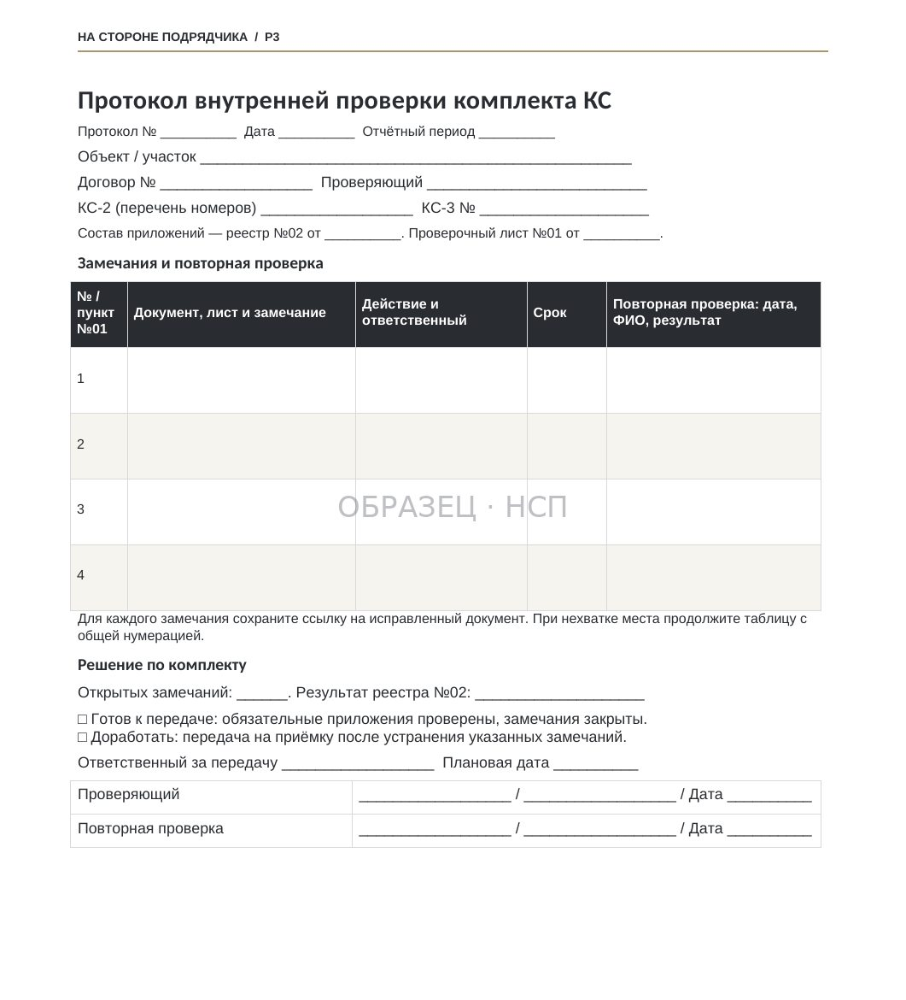
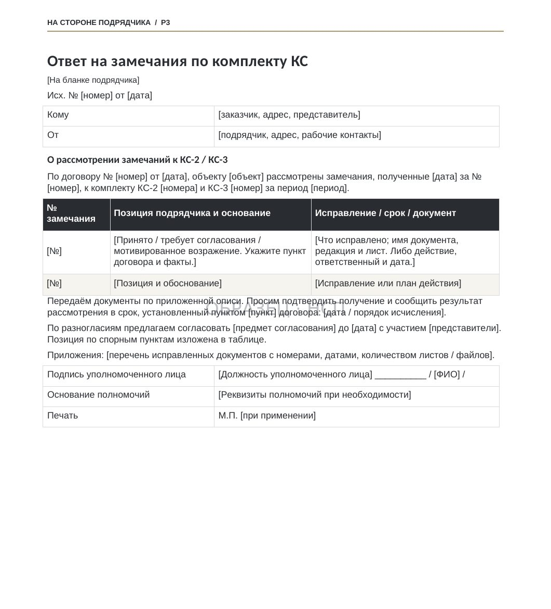

ПРИЁМКА / ДО ПЕРЕДАЧИ
Проверка КС-2 и КС-3 перед сдачей: как подготовить документы и сократить риск возврата
Обновлено 10 ноября 2026
Практический порядок проверки актов выполненных работ, справок о стоимости, исполнительной документации и подтверждений передачи заказчику.
Подрядчик подготовил акты КС-2 и справку КС-3 за отчётный период. Объёмы согласованы производственным участком, сметчик завершил расчёты, документы готовы к направлению заказчику.
При проверке выясняется, что одна позиция повторяет объём предыдущего периода, реквизиты договора в справке отличаются от акта, а часть исполнительной документации отсутствует в реестре приложений. Если такие расхождения обнаружит заказчик, комплект может быть возвращён на уточнение.
Это приводит к дополнительной переписке, повторной передаче документов и, в зависимости от условий договора, может осложнить приёмку и расчёты.
Поэтому перед сдачей работ целесообразно провести внутреннюю проверку комплекта КС-2 и КС-3 по четырём направлениям: договор и реквизиты, подтверждение объёмов, финансовые показатели, состав и доказательства передачи документов.
1. Определите, какие формы и документы предусмотрены договором
Начинать проверку следует с условий строительного подряда или субподряда, а не с заполненных бланков.
Постановлением Госкомстата России от 11 ноября 1999 года № 100 утверждены унифицированные формы КС-2 и КС-3. При этом с 2013 года формы из альбомов унифицированной первичной документации по общему правилу не являются обязательными к применению. Организации могут использовать утверждённые ими формы при соблюдении требований законодательства и обязательных условий конкретного договора.
В случае, когда договор прямо предусматривает КС-2 и КС-3, подрядчику следует подготовить документы в согласованном формате. Если стороны используют иную форму, необходимо проверить наличие обязательных реквизитов первичного учётного документа, предусмотренных статьёй 9 Федерального закона № 402-ФЗ «О бухгалтерском учёте».
Отдельно следует установить:
- Какие работы и этапы подлежат предъявлению в текущем периоде.
- Кто со стороны заказчика уполномочен принимать документы и подписывать акты.
- Какие приложения должны передаваться одновременно с актами.
- Какой срок установлен для проверки, подписания и направления мотивированных замечаний.
- Каким способом подтверждается получение документов заказчиком.
- С какого события договор предусматривает возникновение обязанности по оплате.
Результат проверки: понятный перечень документов и условий, которым должен соответствовать комплект до передачи.
2. Проверьте реквизиты КС-2 и КС-3
Ошибки в реквизитах не всегда меняют содержание выполненных работ, но способны создать разногласия при сопоставлении документов и подтверждении их принадлежности конкретному договору.
В рамках первого прохода следует проверить:
Стороны и договор. Наименования организаций, номер и дата договора, а также реквизиты дополнительных соглашений должны однозначно соответствовать действующим документам.
Объект и участок работ. Наименования стройки, объекта, этапа и вида работ должны позволять определить, к какому объёму относится акт. Если в проектной документации и договоре используются разные обозначения, необходимо установить их соответствие.
Отчётный период. Даты в актах и справках сопоставляются с ранее предъявленными документами и календарным графиком. Следует исключить пересечение объёмов разных периодов.
Номенклатура и единицы измерения. Наименования и измерители сопоставляются со сметой и согласованными ведомостями объёмов. Если применяется пересчёт единиц измерения, его необходимо документально обосновать.
Подписанты. Необходимо проверить полномочия лиц, которые будут подписывать документы. При необходимости готовятся доверенности или иные подтверждающие документы.
Арифметические реквизиты. Сверяются единичные расценки, количество, стоимость строк, итоги, НДС и другие показатели в соответствии с условиями договора.
Выявленные расхождения целесообразно исправить до направления документов, сохранив контроль версий. Нельзя корректировать содержание уже подписанных документов без надлежащего оформления изменений.
3. Сверьте объёмы с фактическим выполнением
Каждая предъявленная к оплате позиция должна иметь документальное подтверждение объёма и принадлежности к согласованному предмету договора.
В зависимости от вида работ используются исполнительные схемы, обмеры, акты освидетельствования скрытых работ, журналы работ, результаты испытаний и иные документы, предусмотренные договором и техническими требованиями.
Проверку удобно проводить по конкретным вопросам:
- Предусмотрена ли позиция договором, сметой или надлежащим образом согласованным изменением?
- Соответствует ли количество фактически выполненному объёму и подтверждающим документам?
- Не предъявлялся ли этот объём ранее в составе другого акта?
- Не включены ли в текущий акт работы, которые ещё не выполнены или не готовы к предусмотренной договором приёмке?
- Имеются ли необходимые документы на скрытые работы и результаты обязательных испытаний?
Важно проверять не только отдельную строку КС-2, но и накопительный объём по договору. Повторное предъявление ранее закрытого количества может привести к разногласиям по всему расчёту.

Для дополнительных работ требуется отдельная проверка основания их возникновения и согласования. Включение новой позиции в КС-2 не заменяет надлежащего изменения договорных обязательств.
Подробнее о процедуре — дополнительные работы в строительстве: порядок согласования и оплаты.
4. Проверьте КС-3 и расчётную часть
Акт КС-2 и справка КС-3 выполняют разные функции. При использовании унифицированных форм данные о выполненных объёмах и их стоимости должны согласованно отражаться в расчётных документах.
Проверке подлежат:
Стоимость за отчётный период. Показатели справки сверяются с соответствующими актами и предусмотренным договором порядком определения стоимости работ.
Нарастающий итог. Необходимо сопоставить данные с ранее оформленными справками и фактически принятыми объёмами, исключить повторный учёт.
Расценки и коэффициенты. Следует проверить, что применены согласованные правила ценообразования, индексы и другие расчётные параметры.
НДС. Показатели налога и порядок его отражения проверяются с учётом действующего налогового режима сторон и условий договора. Необходимо исключить двойное начисление либо ошибочное исключение суммы налога.
Авансы и удержания. Не следует автоматически уменьшать показатели фактически выполненных работ на суммы аванса или гарантийного удержания. Их зачёт и отражение в расчётах определяются договором и соответствующим документооборотом.
Изменение цены. Если в периоде появились согласованные дополнительные работы, уточнённые расценки или изменённый объём, это должно быть подтверждено документально.
Для проверки полезно отдельно вести реестр ранее предъявленных объёмов и стоимости. Это позволяет сопоставлять текущий комплект с историей расчётов, а не восстанавливать данные по отдельным актам.
Подробно о гарантийном удержании — в материале об удержаниях в КС-2 и КС-3.
5. Проверьте состав исполнительной документации и приложений
Комплект КС-2 и КС-3 может сопровождаться исполнительной документацией, ведомостями, актами, схемами и другими материалами. Конкретный перечень определяется договором, видом работ и применимыми техническими требованиями.
Особенно важно не смешивать два вопроса:
- Достаточность документов для предусмотренной договором сдачи и оплаты работ.
- Обязанность вести и передавать исполнительную документацию в соответствии с техническим регулированием.
Они связаны между собой, но не всегда совпадают по объёму и моменту исполнения.
При проверке следует убедиться в наличии применимых актов скрытых работ, исполнительных схем, протоколов испытаний, паспортов и сертификатов на материалы, журналов работ и иных предусмотренных документов.
Состав и порядок ведения исполнительной документации регулирует приказ Минстроя России от 16 мая 2023 года № 344/пр, действующий с учётом изменений, вступивших в силу 1 марта 2026 года. Для акта скрытых работ рекомендуется ориентироваться на актуальные требования к его составу и предусмотренный приказом образец.
Если в продукте используется адаптированная редактируемая форма, её необходимо проверить применительно к конкретному объекту: наличие такого шаблона не означает автоматического соответствия всем требованиям.
О составе исполнительной документации подробно рассказано в отдельной статье НСП.
6. Сформируйте реестр передаваемых документов
Перед отправкой заказчику необходимо составить точный перечень файлов и бумажных документов, которые фактически передаются вместе с актами.
В реестре желательно отразить:
- Наименование каждого документа.
- Номер и дату его составления.
- Объект, участок или этап, к которому он относится.
- Количество листов либо идентификатор электронного файла.
- Статус проверки и наличие подписи, если она требуется.
- Примечания об исправлениях или ранее направленных экземплярах.
Реестр выполняет сразу две задачи. Во-первых, позволяет выявить недостающие приложения до передачи. Во-вторых, помогает доказать, какие именно материалы были направлены заказчику.

При электронной передаче желательно сохранять состав отправленного пакета, сведения о доставке и идентификаторы документов. При бумажной — использовать опись и подтверждение вручения в соответствии с договором.
Необходимо учитывать, что не каждое отсутствие документа автоматически оправдывает отказ в приёмке результата работ. Юридическая оценка зависит от характера документа, условий договора и влияния недостатка на возможность проверить предъявленные работы.
7. Организуйте внутреннюю проверку перед сдачей
Рекомендуется разделить подготовку комплекта и его окончательную проверку между разными сотрудниками, когда это позволяет организация работы.
Для проверки можно использовать единый лист с отметками «Соответствует», «Требует исправления», «Не применяется» и указанием основания для последнего варианта.
Проверка проводится последовательно:
Проход 1 — договор и реквизиты. Сверить форму, стороны, договор, объект, отчётный период и полномочия.
Проход 2 — объёмы. Проверить смету, ведомости, исполнительные документы, накопительные показатели и отсутствие повторного предъявления.
Проход 3 — стоимость. Пересчитать строки, итоги, данные КС-3, налоги и договорный порядок зачётов.
Проход 4 — приложения и передача. Проверить комплектность, реестр, подписи, сопроводительное письмо и выбранный канал передачи.
Замечания следует фиксировать в протоколе: документ, конкретное расхождение, ответственное лицо, срок исправления и результат повторной проверки.
Это позволяет не ограничиваться устной проверкой, а установить, какие ошибки устранены и кто подтвердил готовность комплекта к передаче.

8. Передайте комплект заказчику с подтверждением получения
Даже корректно подготовленный комплект необходимо направить таким способом, чтобы впоследствии можно было подтвердить дату передачи и его содержание.
Предусмотренный договором порядок может включать электронный документооборот, передачу через согласованную информационную систему, вручение уполномоченному представителю или направление по почте.
При отправке целесообразно зафиксировать:
- Дату и способ направления.
- Адресата и основание его полномочий.
- Перечень направленных КС-2, КС-3 и приложений.
- Подтверждение отправки и получения.
- Договорный срок рассмотрения документов и дату ожидаемого ответа.
Для строительного подряда значение имеет и уведомление о готовности результата к сдаче. Согласно статье 753 ГК РФ заказчик, получивший соответствующее сообщение, обязан приступить к приёмке в предусмотренном законом и договором порядке.
При этом дата передачи КС-2 не во всех случаях равнозначна дате возникновения обязанности по оплате. Необходимо отдельно проверить согласованные этапы, порядок приёмки и условия расчётов.
9. Если заказчик вернул акты с замечаниями
Полученные замечания следует зафиксировать письменно и классифицировать.
Технические замечания к документам. Ошибки в реквизитах, оформлении, единицах измерения, составе приложений и расчётах проверяются и при необходимости исправляются.
Возражения по количеству или качеству работ. Необходимо определить, какие позиции оспариваются, на какие документы и обстоятельства ссылается заказчик и требуется ли совместный осмотр или дополнительные измерения.
Требования, не предусмотренные договором. По ним формируется мотивированная позиция подрядчика с указанием соответствующих положений договора и применимых норм.
Разногласия по стоимости. Отдельно рассматриваются сметные расценки, дополнительные объёмы, коэффициенты, зачёты и удержания.
По каждому замечанию желательно указать результат рассмотрения: принято и исправлено, требует согласования либо отклонено с обоснованием.
Повторный комплект следует направлять с сопроводительным письмом и перечнем изменённых документов. Важно сохранять как первоначальную, так и скорректированную редакцию — вместе с подтверждением передачи.

10. Если заказчик не подписывает КС-2 и не направляет возражений
Отсутствие ответа требует отдельного документального маршрута, а не бесконечного повторного направления одного и того же комплекта.
Следует установить, получил ли заказчик уведомление о готовности к сдаче и сами документы, истёк ли предусмотренный договором срок рассмотрения и были ли направлены мотивированные замечания.
Пункт 4 статьи 753 ГК РФ допускает оформление одностороннего акта при отказе другой стороны от подписания. При этом односторонний акт не означает автоматического взыскания оплаты: для его оценки имеют значение доказательства выполнения работ, соблюдение процедуры сдачи и обоснованность отказа заказчика.
Следует разграничивать отсутствие подписи на промежуточном расчётном документе, порядок приёмки отдельного этапа и приёмку результата строительства в целом.
Подробнее — работы выполнены, но заказчик их не принимает.
11. Как проверка документов связана с получением оплаты
Корректно подготовленные КС-2, КС-3 и приложения снижают вероятность обоснованных замечаний к комплекту. Однако сами по себе не гарантируют поступления денег.
Порядок оплаты строительных работ регулируется статьёй 746 ГК РФ и условиями договора. Необходимо установить конкретный срок исполнения денежного обязательства, условия зачёта аванса, наличие гарантийного удержания и другие предусмотренные расчётные обстоятельства.
Если работы приняты, а срок оплаты наступил и заказчик не перечислил деньги, дальнейшие действия связаны уже не столько с проверкой комплекта КС, сколько с подтверждением задолженности и претензионной работой.
Для этого предусмотрен отдельный материал: заказчик не оплачивает выполненные работы — порядок действий подрядчика.
12. Документы для проверки комплекта КС перед сдачей
В продуктовой линейке «На стороне подрядчика» представлен комплект «Подготовка и проверка КС-2 и КС-3».
В текущей опубликованной редакции P3 содержится 11 файлов: семь документов Word, две таблицы Excel и две PDF-инструкции и алгоритма. В том числе:
- Проверочный лист комплекта КС — 40 контрольных пунктов.
- Реестр приложений для проверки состава передаваемых документов.
- Редактируемая форма акта освидетельствования скрытых работ.
- Протокол внутренней проверки и повторного контроля.
- Шаблон ответа на замечания заказчика.
- Журнал передачи документов.
- Алгоритм проверки и перечень типовых ошибок.
Стоимость комплекта — 17 900 ₽.
P3 предназначен для проверки и передачи актов, справок и приложений, а также документирования замечаний. Полный комплект для оформления сдачи работ и последующего взыскания задолженности — отдельный продукт «Получение оплаты за выполненные работы» (P1).
Документы требуют заполнения и адаптации под конкретный договор, объект и порядок приёмки. Проверочный лист не заменяет технический контроль качества работ, а формы не гарантируют подписание актов заказчиком.
Главный вывод
Проверка КС-2 и КС-3 перед сдачей — это контроль согласованности договорных условий, фактических объёмов, расчётов и подтверждающих документов.
Наиболее практичный порядок — проверить комплект внутри компании, зафиксировать выявленные расхождения, устранить их до отправки и сохранить доказательства передачи окончательной редакции.
Такой подход сокращает риск повторных согласований и создаёт более определённую документальную основу для приёмки и дальнейших расчётов.
КОМПЛЕКТ P3 / 11 ФАЙЛОВ
Подготовка и проверка КС-2 и КС-3
Проверочный лист на 40 пунктов, реестр приложений, протокол внутренней проверки, журнал передачи, ответ на замечания, рабочая форма акта скрытых работ и инструкции. Семь Word, две Excel и два PDF. Формы адаптируются под договор и объект.
17 900 ₽
Посмотреть состав комплектаБЕСПЛАТНО, ЗА EMAIL
КС без возврата: проверочный лист комплекта
Комплект вернули на доработку — значит, в нём нашли то, что можно было поймать до передачи. Проверочный лист, реестр приложений и типовые причины возврата ловят это у вас, а не у заказчика.
- Проверочный лист комплекта КС
- Реестр приложений
- Типовые причины возврата
- Порядок внутренней проверки